The PinDou identity, ready for a little company. Download logos, profile artwork, Instagram posts and vertical covers. Editable source and captions are included in the repository.
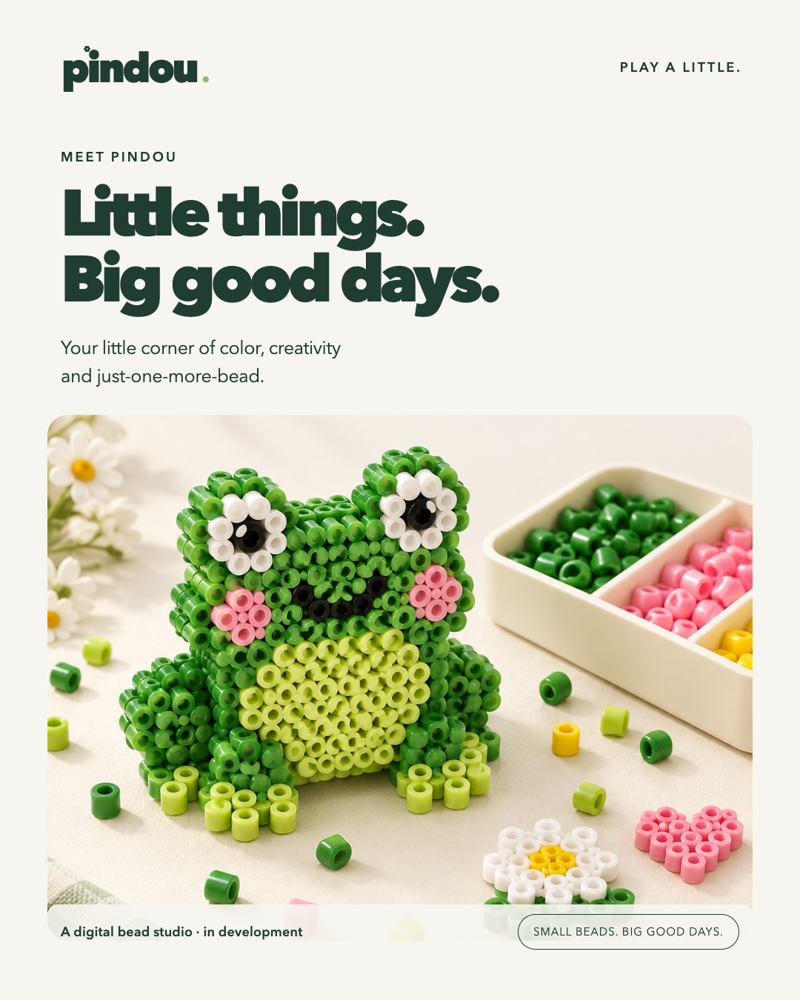
01-meet-pindou ↓ PNG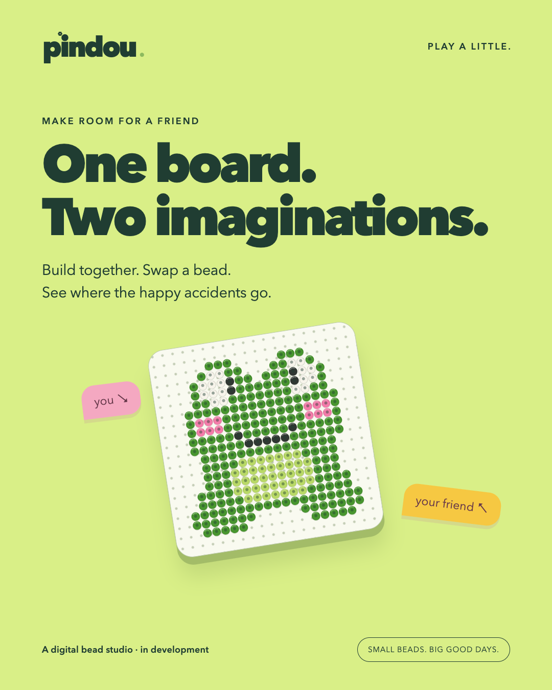
02-better-together ↓ PNG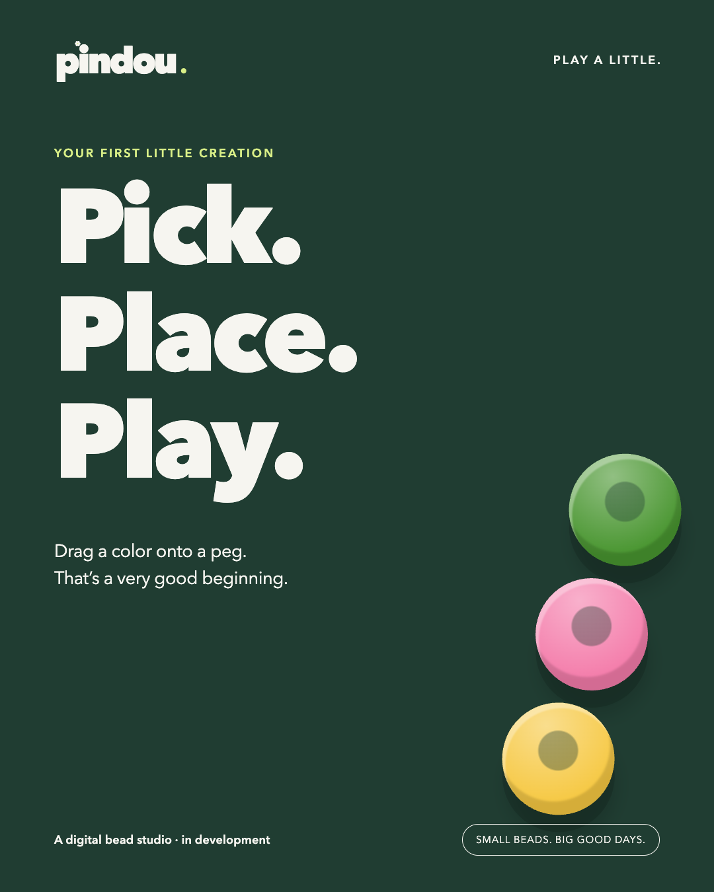
03-pick-place-play ↓ PNG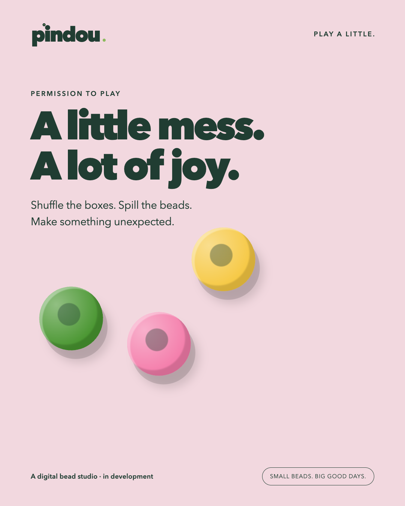
04-happy-accidents ↓ PNG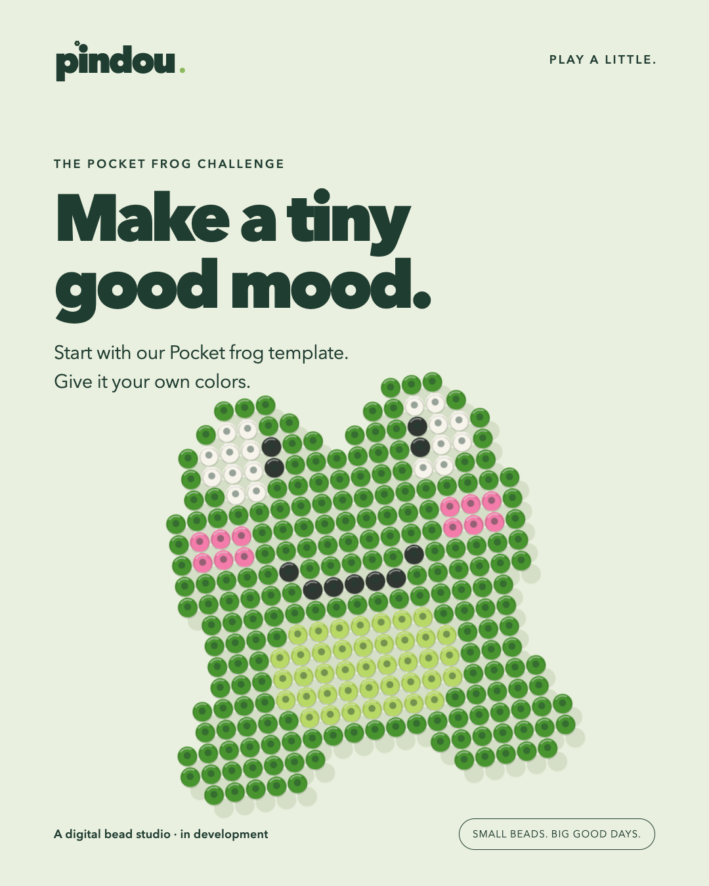
05-pocket-frog ↓ PNG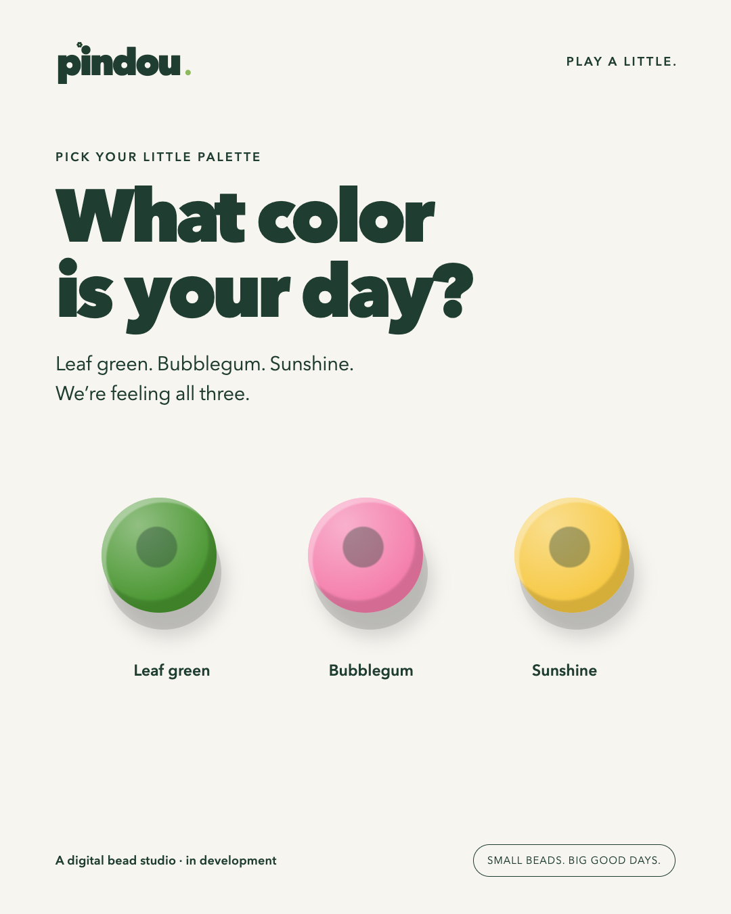
06-palette-date ↓ PNG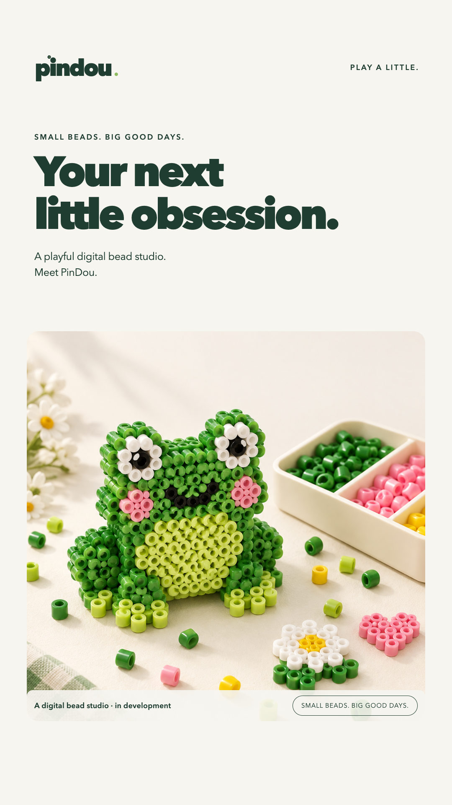
07-story-intro ↓ PNG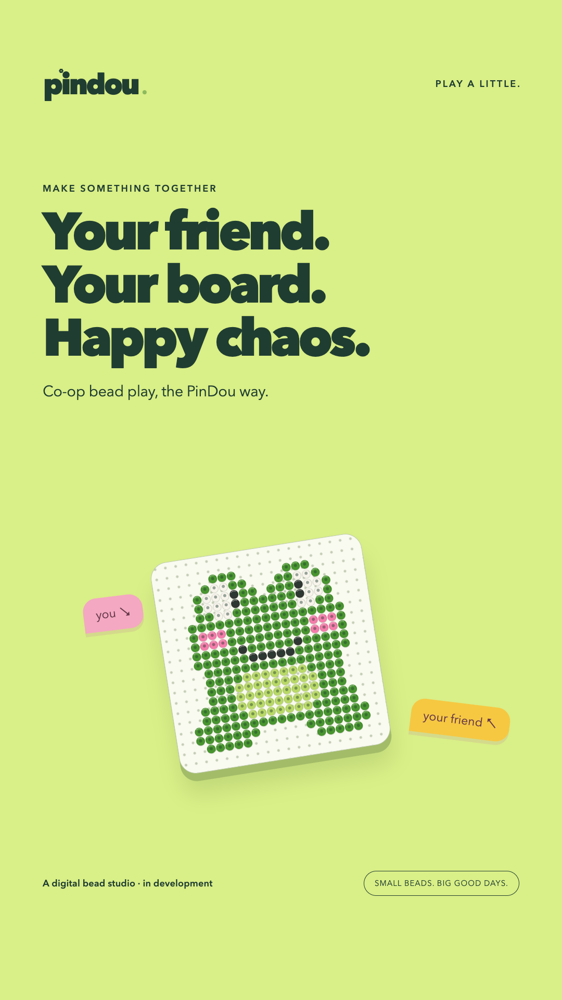
08-tiktok-coop-cover ↓ PNG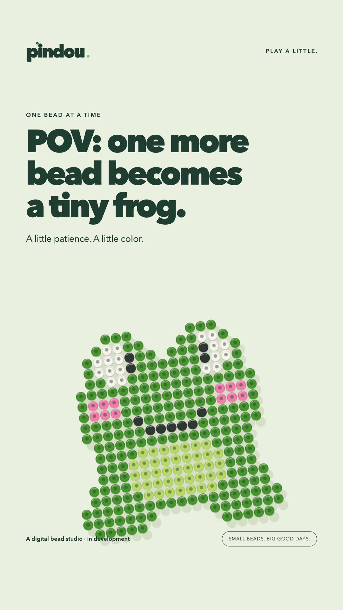
09-tiktok-frog-cover ↓ PNG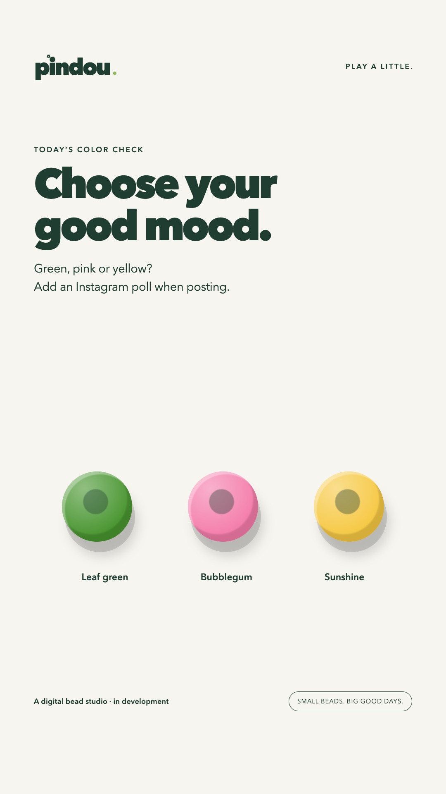
10-story-palette ↓ PNG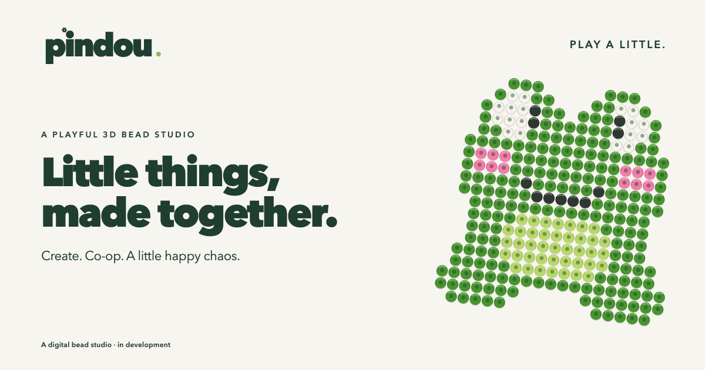
github-banner ↓ PNG